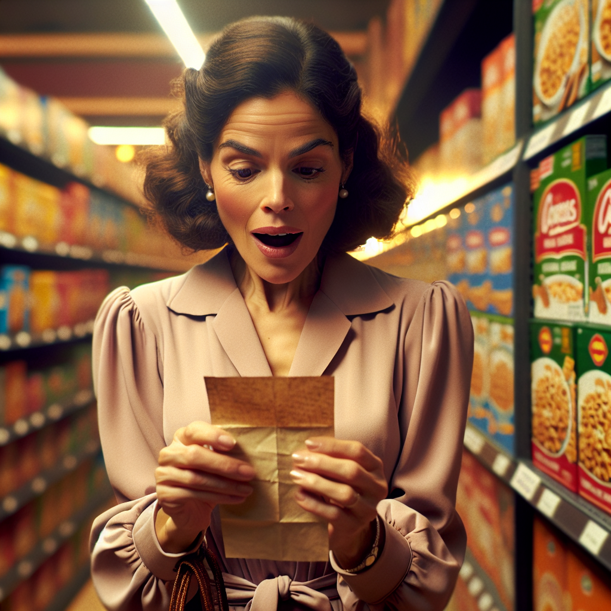
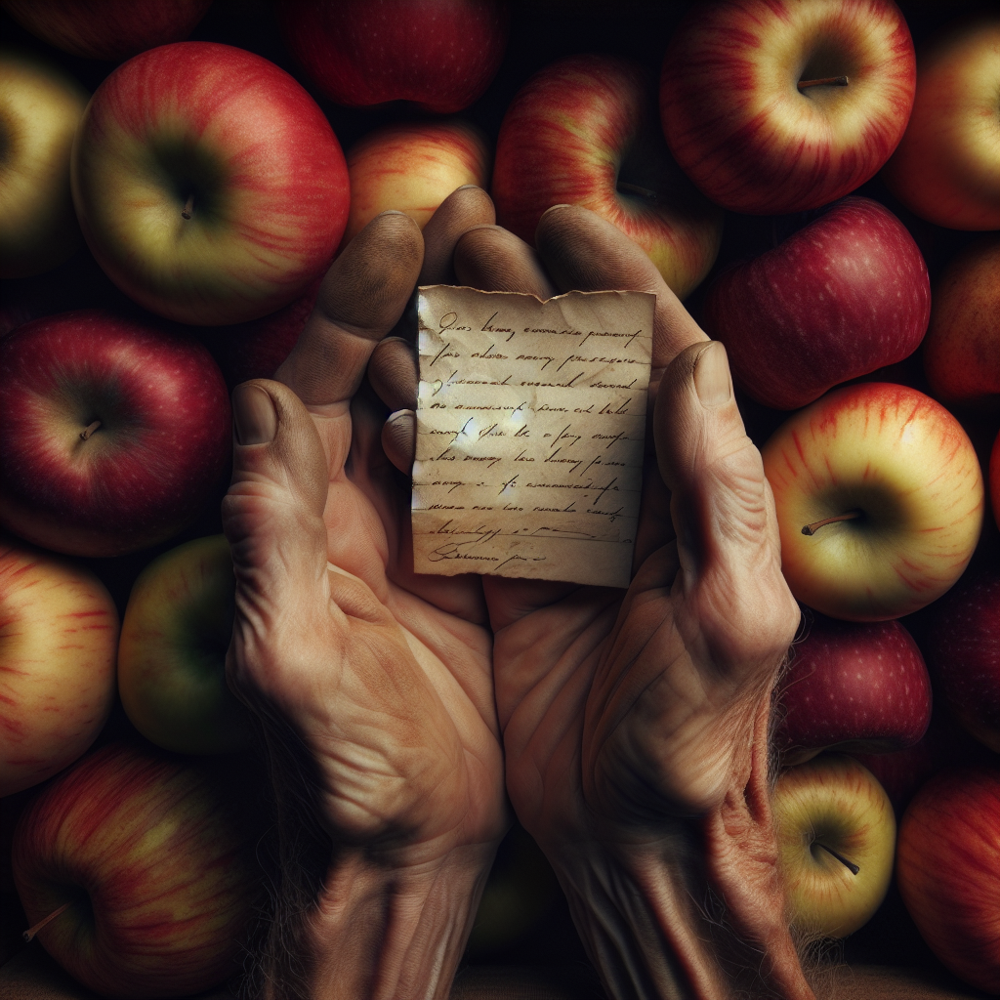
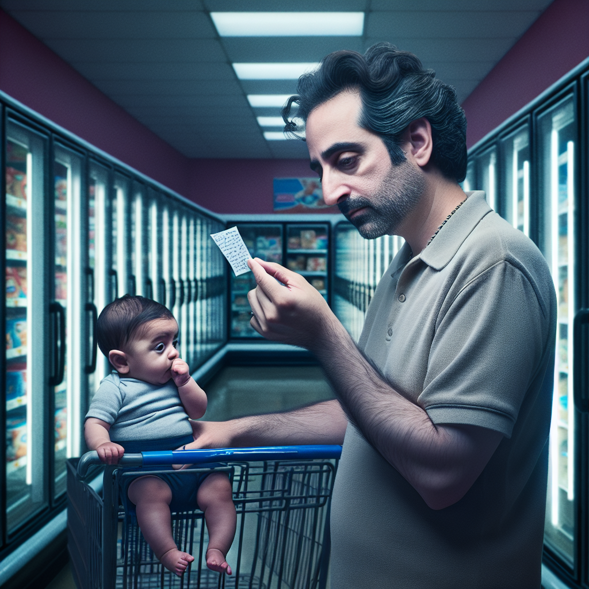
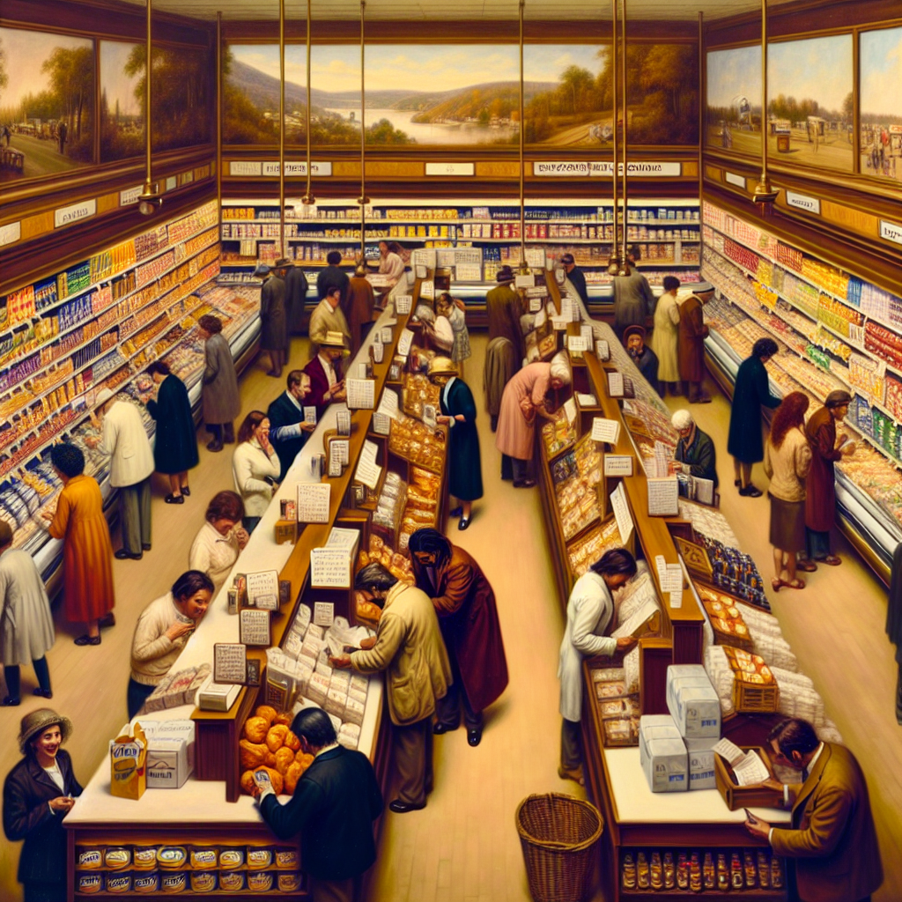

I leave tiny handwritten anonymous confessions hidden in grocery stores, then photograph them being discovered by unsuspecting shoppers.
Found her reading my confession about missing my grandmother's lasagna while standing in the frozen dinner aisle. She held it for a full minute, then quietly put back the Stouffer's and walked away. Sometimes strangers hold our secrets better than we do.
Left 'I pretend organic apples taste better but honestly can't tell the difference' tucked between Honeycrisps. Watched a woman find it, snort-laugh, then defiantly grab the regular ones. My confession became her permission slip.
Today's confession: 'I shop here because my ex hated this store.' Photographed through the security mirror as someone discovered it near the self-checkout. They looked around like they were searching for the writer. We're all haunted by love in aisle 7.
Slipped 'I buy flowers for myself and tell the cashier they're for my mom' into the bouquet section. An elderly man found it, smiled, and picked up daisies. Twenty minutes later, saw him at checkout: 'these are for my wife.' My lie became his truth.
She found my note—'I come here when I'm lonely because the employees say hello'—crumpled in a shopping cart. Watched her smooth it out, read it twice. Then she made eye contact with every worker she passed. Loneliness is contagious. So is kindness.

The moment of discovery - capturing the tender vulnerability when someone finds an anonymous confession

The planting - showing the anonymous confessor hiding their secret message

The connection - showing how confessions create unexpected emotional bridges between strangers

The network - revealing how confessions create a web of hidden human connection throughout everyday spaces
The intimacy - focusing on the physical and emotional texture of anonymous confession sharing